What's New in Aiken Plugin
Version {{VERSION}}
If you have feedback, suggestions, or found a bug, please open an issue on
GitHub.
Aiken Plugin 2.0 is a major step forward. The plugin is no longer just editor support with formatting
and basic navigation. It now turns JetBrains IDEs into a much more complete Aiken development environment:
version-aware project creation, managed toolchains, IDE-integrated runners, deeper code intelligence,
and smoother day-to-day workflows across the editor, terminal, and project lifecycle.
Full Aiken Workflow
Build, check, parametrize blueprints, generate artifacts, and clean outputs directly from IDE run configurations.
Version-Aware Projects
Create projects with a selected Aiken version, a compatible stdlib, and either a global or local toolchain.
Code Intelligence Upgrade
Navigation, rename, usages, completion, and parameter info now run on a stronger semantic model.
Toolchain That Fits the Project
Local Aiken is synchronized with aiken.toml and can also be used automatically in the IDE terminal.
Big picture: v2.0 upgrades the plugin from "editor support for Aiken files" to
"a project-aware Aiken workspace inside the IDE".
Run Aiken from the IDE
Dedicated Run Configurations
- A new
Aiken run configuration type is now available.
- Built-in workflows:
Run checks, Build blueprint, Parametrize blueprint, Make artifacts, and Clean artifacts.
- This removes the need to manage the full Aiken workflow manually from the terminal.
Run checks
check can now build an IDE-integrated result tree instead of dumping everything as raw terminal text.- Warnings and errors are grouped into dedicated sections and linked back to source files.
- Runner behavior was hardened across different Aiken versions, including older output formats.
Build blueprint
build now has a proper build-style UX with diagnostics, file navigation, and clickable output.- Warnings and errors are surfaced as build diagnostics instead of pretending to be test nodes.
Blueprint workflows
Parametrize blueprint adds an IDE workflow for applying parameters to blueprints.- The parameter editor understands nested constructors, lists, maps, options, byte arrays, integers, booleans, and raw values.
- Blueprints with more than one matching validator can now be handled without dropping to raw CLI output.
Make artifacts adds a dedicated workflow for generating useful build outputs.Clean artifacts completes the lifecycle with predictable cleanup.
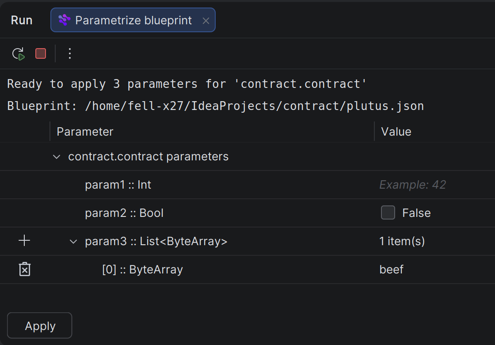
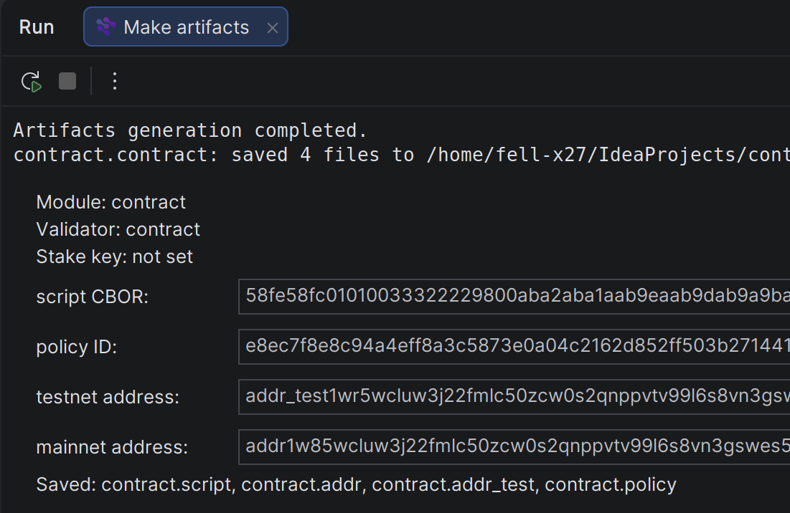
Create Version-Aware Aiken Projects
New Project Wizard
- Aiken now has its own entry in the IDE's
New Project flow.
- You can choose project type, Aiken version, and a compatible
stdlib version.
- The wizard supports both
Use global Aiken and Install locally (recommended).
- Projects opened in the IDE for the first time can also receive default Aiken run configurations automatically.
Managed toolchain
- Projects now have an explicit toolchain model.
- Local Aiken is installed directly into the project and synchronized with the compiler version declared in
aiken.toml.
- The wizard also filters
stdlib choices through a bundled compatibility matrix.
Smarter Code Intelligence
Navigation, rename, and usages
- Reference resolution is now much more semantic and significantly closer to native IntelliJ behavior.
Go to Declaration, Find Usages, and Rename are more accurate for imports, aliases, shadowing, cross-module references, and callable locals.- The new indexing model introduces explicit module, export, and top-level symbol knowledge.
Completion and parameter info
- Completion is now much more semantic, especially for expected types, scopes, imports, aliases, destructuring, qualified exports, and typed positions.
- Record construction, record destructuring,
let/expect patterns, validators, subvalidators, and module-qualified calls are handled as dedicated scenarios.
- Suggestions are quieter where auto-popup would be noisy, and accepting functions no longer forces named arguments.
Ctrl+P / parameter info now handles more realistic Aiken call forms, including pipes, callable locals, partial application, grouped callables, validators, and subvalidators.
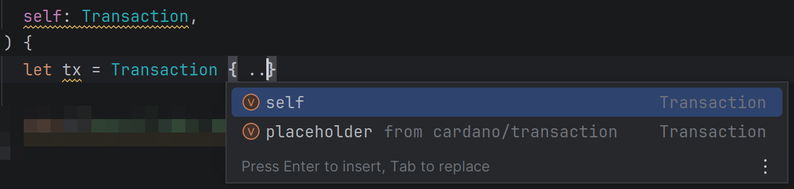
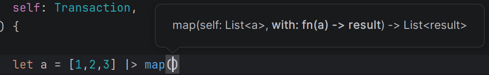
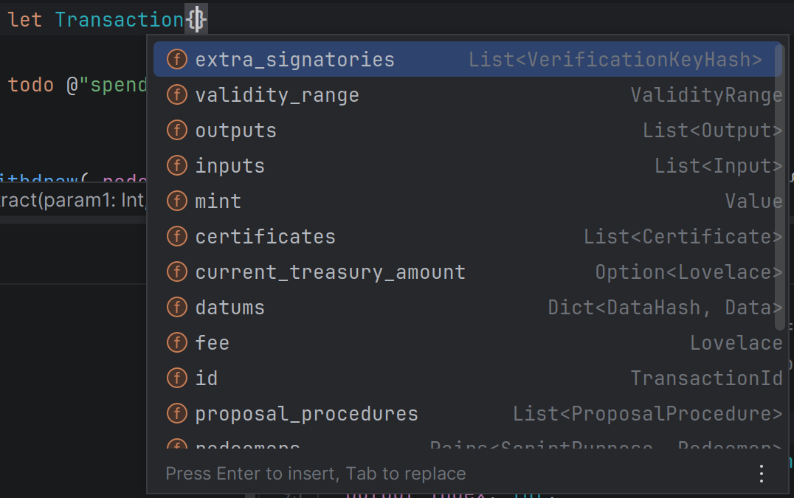
Imports and modules
use completion now understands indexed modules, nested module paths, aliases, and duplicate export names.- Auto-import works from ordinary completion when selecting an export that is not imported yet.
- Qualified completion is predictable: type a module qualifier first, then choose from that module's contents.
Go to Symbol and Structure View
Go to Symbol was added for top-level Aiken declarations.Structure View was added for quick file-level browsing.- These features are built on the same stronger symbol model that now powers navigation and completion.
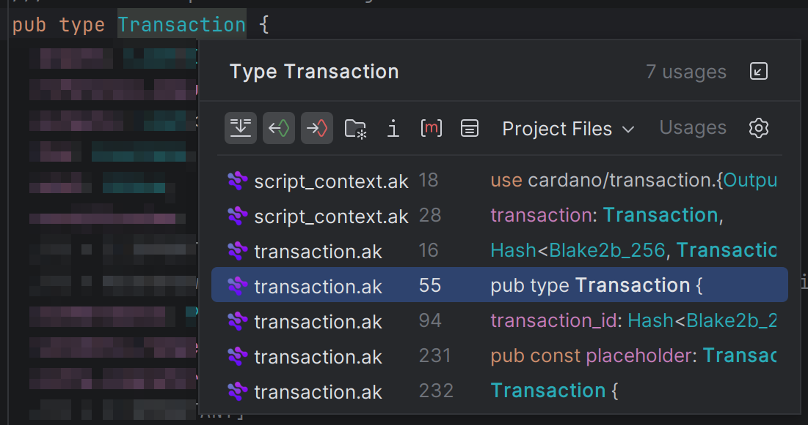
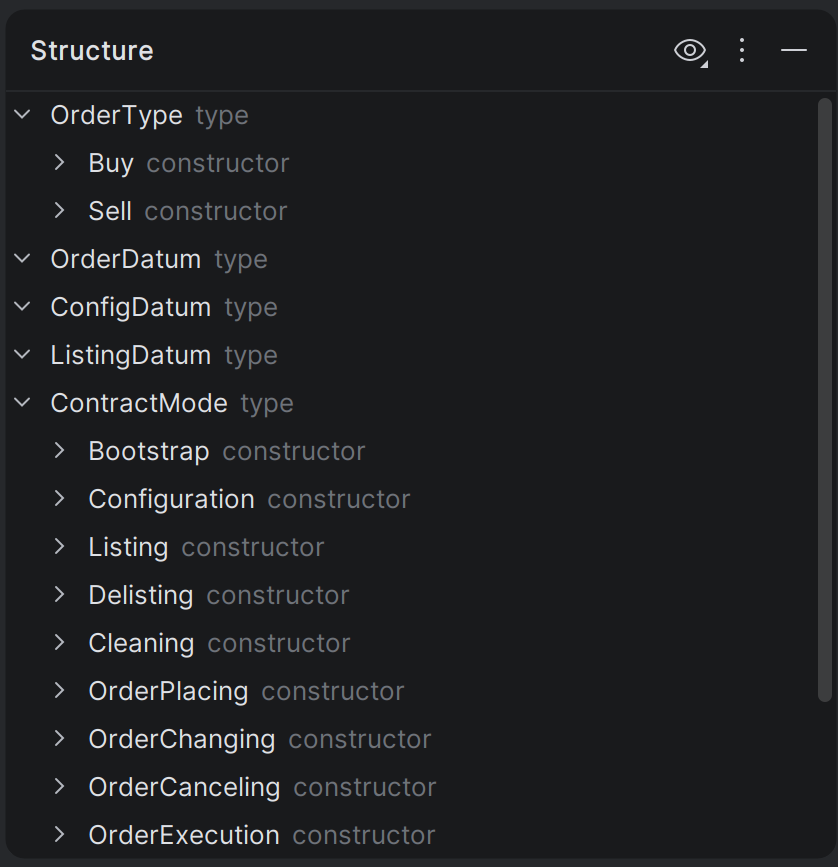
Better LSP and Everyday Workflow
LSP polish
- LSP integration remains the source of diagnostics, hover, and code actions.
- Unused import quick fixes are now friendlier: alongside the per-import action, the IDE can also offer
Remove all unused imports.
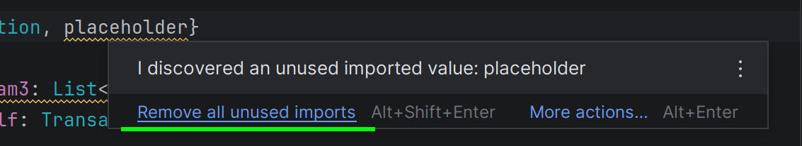
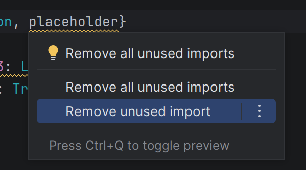
New → Aiken File
- A dedicated
Aiken File action was added to the IDE New menu.
- You can create a validator file, a test file, or a common Aiken file directly from the IDE.
- Validator templates stay aligned with the active Aiken toolchain.
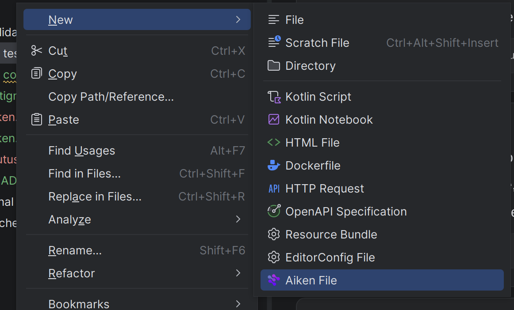
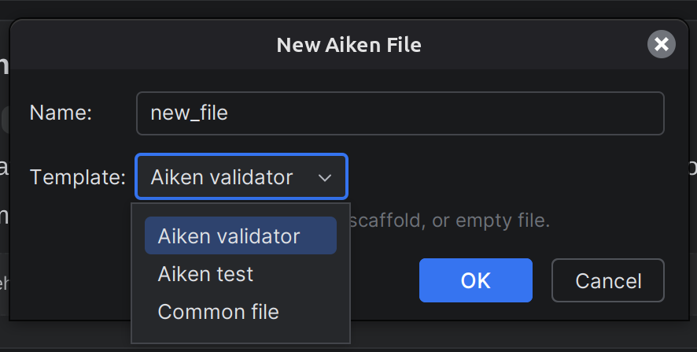
IDE terminal integration
- When a project uses a local toolchain, newly opened IDE terminal sessions can resolve
aiken to the project-local binary automatically.
- This keeps the terminal workflow aligned with the runners and the configured project toolchain.
Aiken Plugin 2.0 is not just a feature bump. It reorganizes the plugin around the project itself:
project-aware toolchains, version-aware scaffolding, stronger semantic intelligence, and IDE-native workflows for real Aiken development.